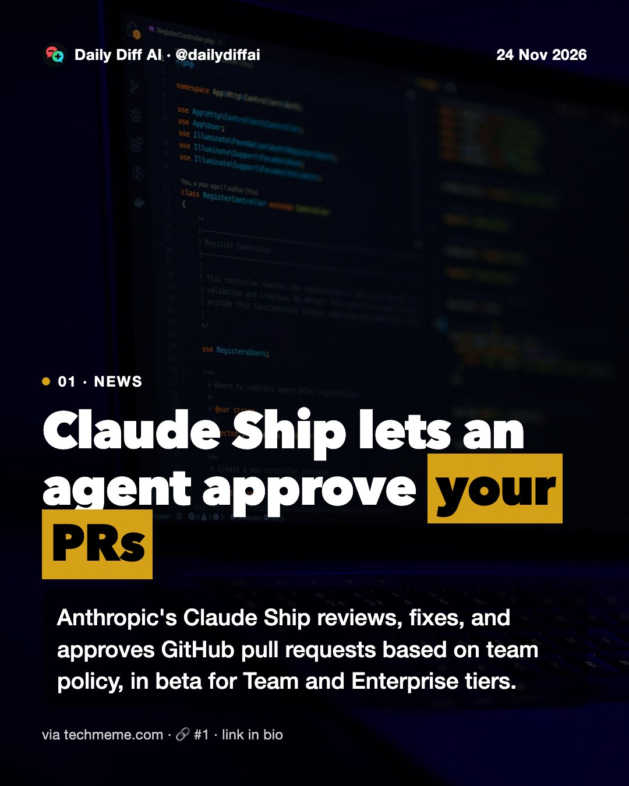
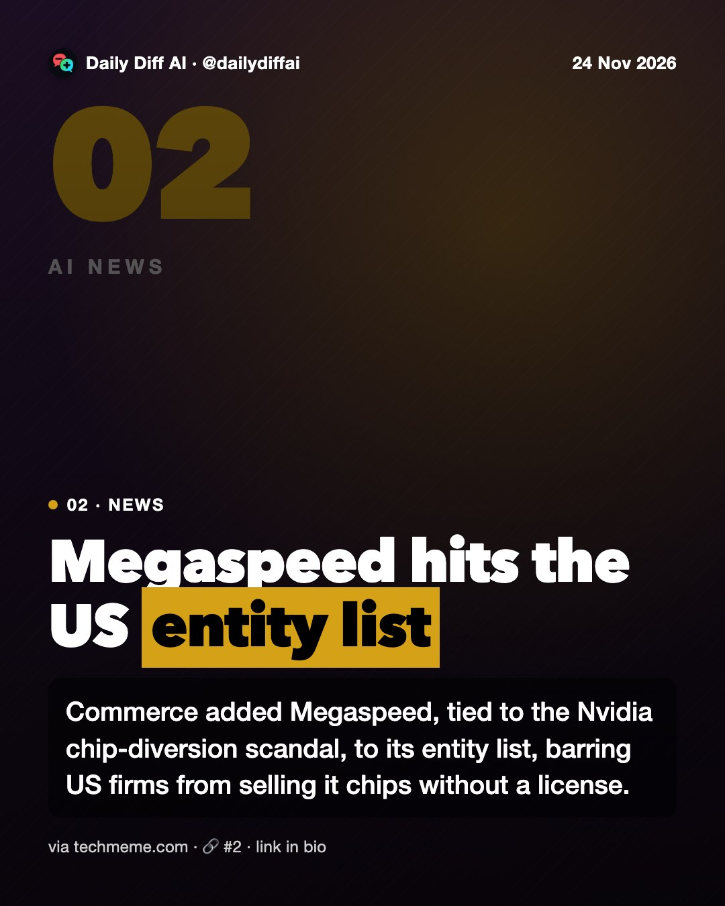
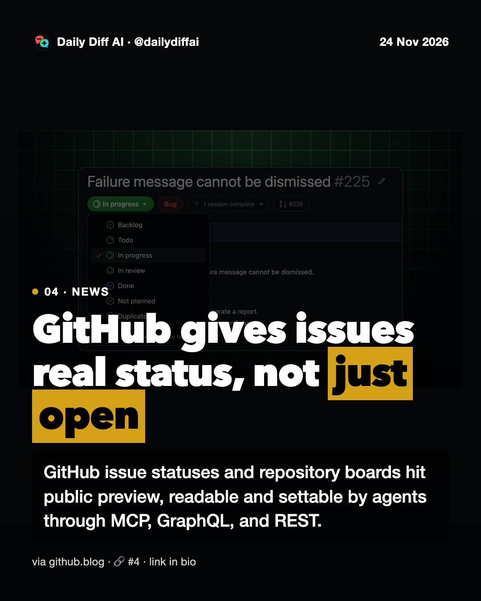
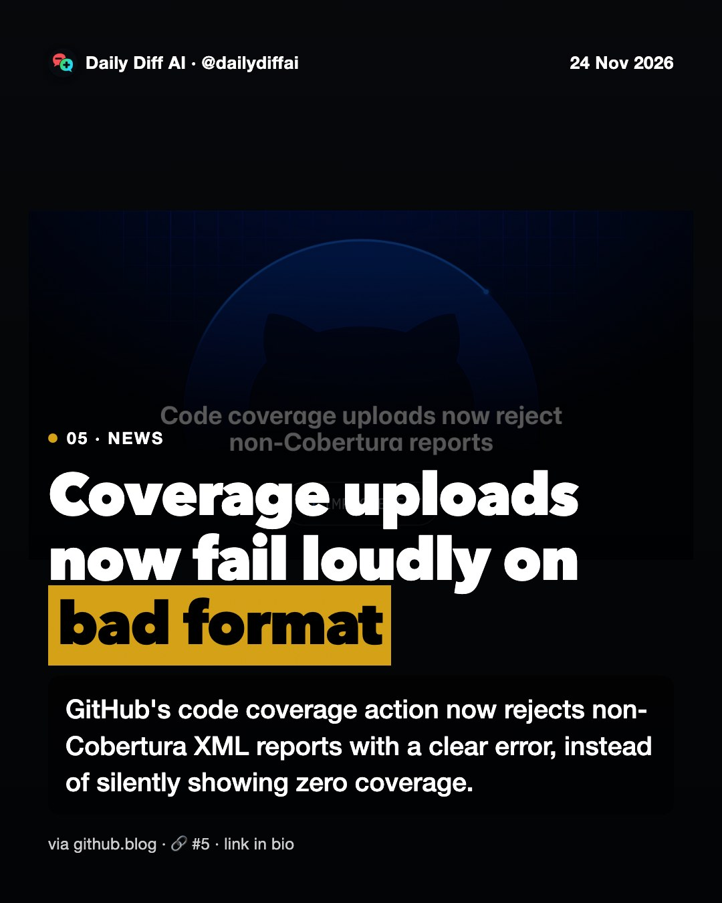
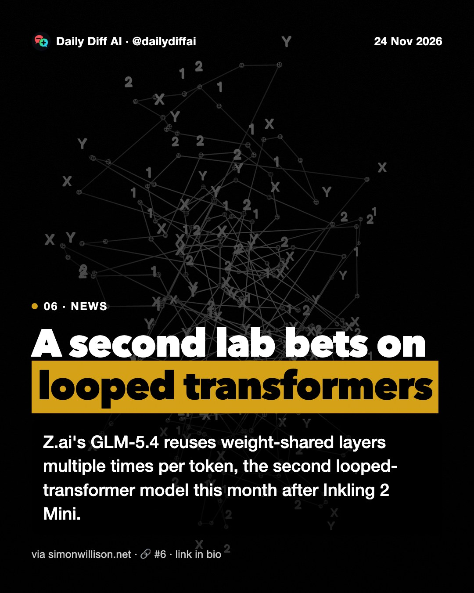
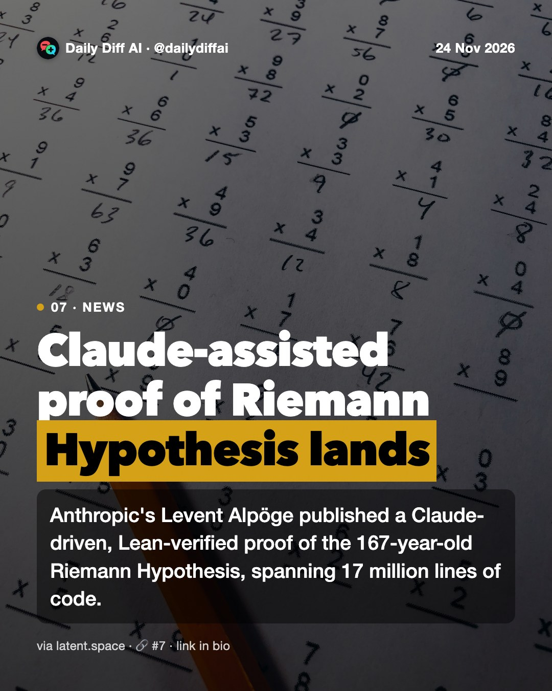
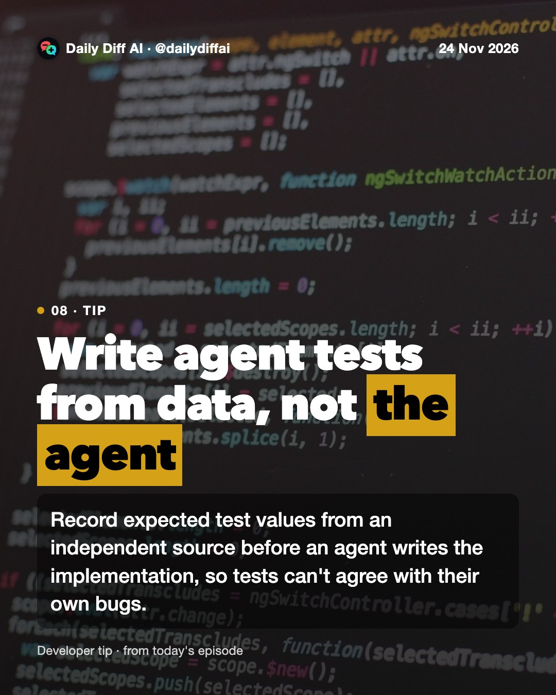
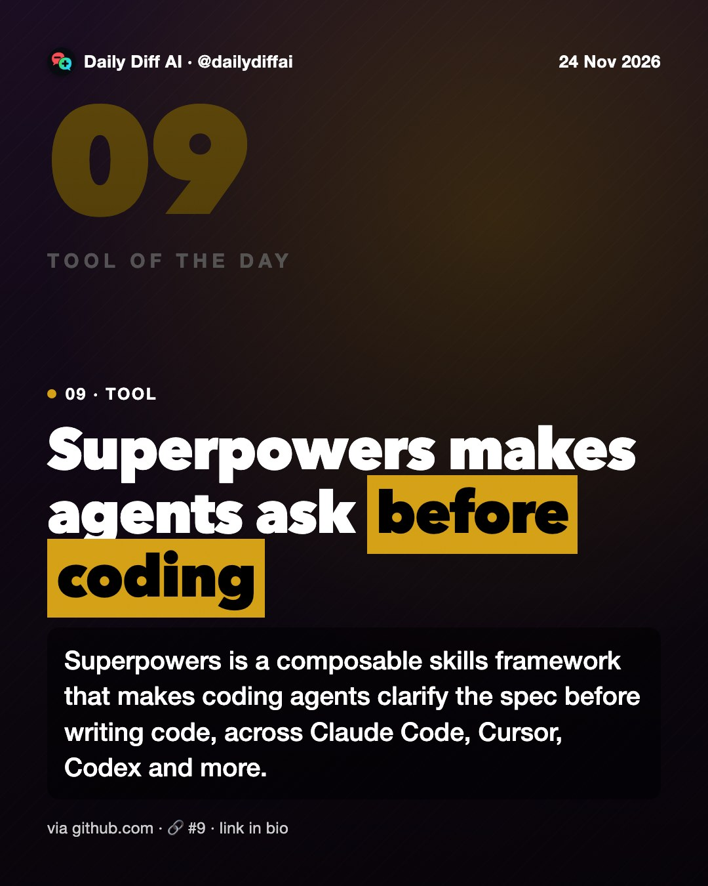
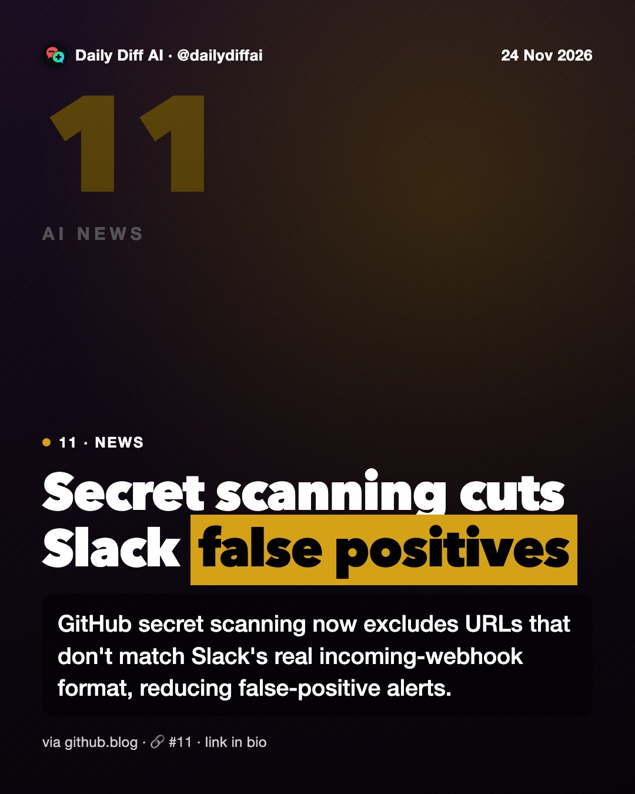

Daily Diff AI

Claude Ship lets an agent approve your PRs
Anthropic's Claude Ship reviews, fixes, and approves GitHub pull requests based on team policy, in beta for Team and Enterprise tiers.
Read on techmeme.com →
Megaspeed hits the US entity list
Commerce added Megaspeed, tied to the Nvidia chip-diversion scandal, to its entity list, barring US firms from selling it chips without a license.
Read on techmeme.com →Huang back as CEO, board skipped leadership
Nvidia's board reinstated Jensen Huang as CEO without consulting senior leadership first; Nasdaq 100 jumped 7% on the news.
Read on techmeme.com →
GitHub gives issues real status, not just open
GitHub issue statuses and repository boards hit public preview, readable and settable by agents through MCP, GraphQL, and REST.
Read on github.blog →
Coverage uploads now fail loudly on bad format
GitHub's code coverage action now rejects non-Cobertura XML reports with a clear error, instead of silently showing zero coverage.
Read on github.blog →
A second lab bets on looped transformers
Z.ai's GLM-5.4 reuses weight-shared layers multiple times per token, the second looped-transformer model this month after Inkling 2 Mini.
Read on simonwillison.net →
Claude-assisted proof of Riemann Hypothesis lands
Anthropic's Levent Alpöge published a Claude-driven, Lean-verified proof of the 167-year-old Riemann Hypothesis, spanning 17 million lines of code.
Read on latent.space →
Write agent tests from data, not the agent
Record expected test values from an independent source before an agent writes the implementation, so tests can't agree with their own bugs.

Superpowers makes agents ask before coding
Superpowers is a composable skills framework that makes coding agents clarify the spec before writing code, across Claude Code, Cursor, Codex and more.
Read on github.com →Nvidia board bypassed its own executives
Bloomberg reports Nvidia's board reinstated Jensen Huang without consulting senior leadership, who learned of the decision at the last minute.
Read on techmeme.com →
Secret scanning cuts Slack false positives
GitHub secret scanning now excludes URLs that don't match Slack's real incoming-webhook format, reducing false-positive alerts.
Read on github.blog →